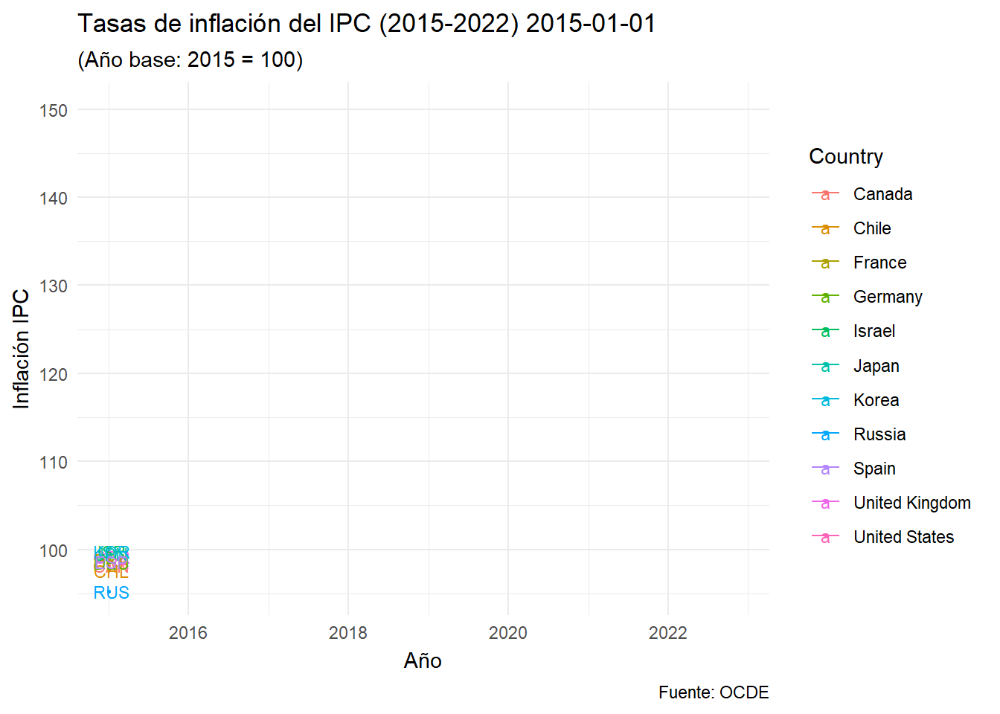
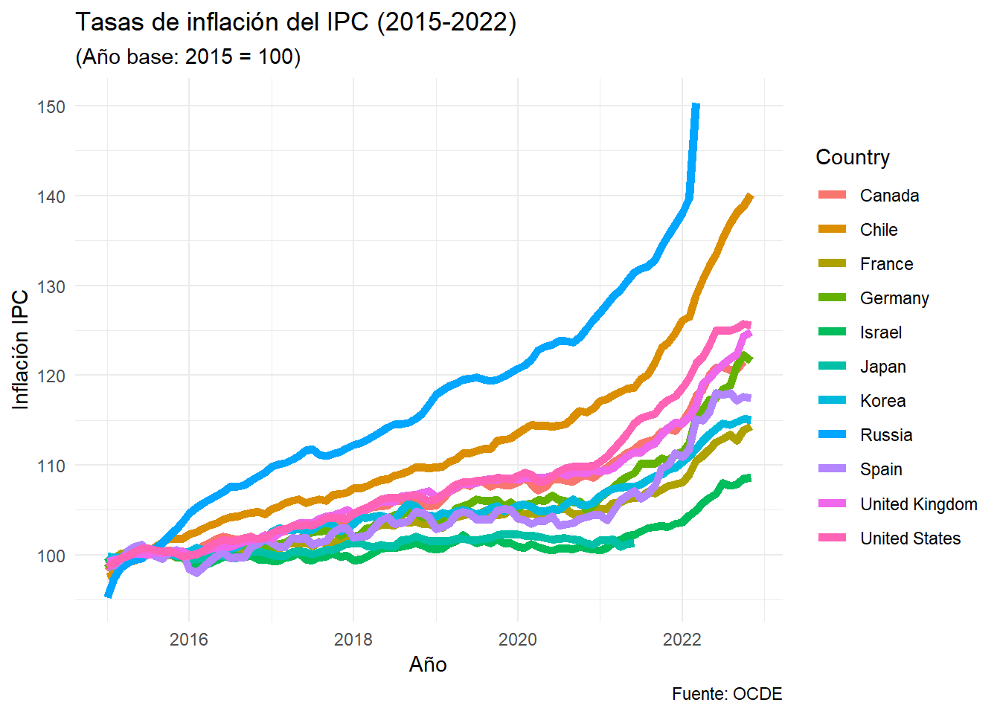
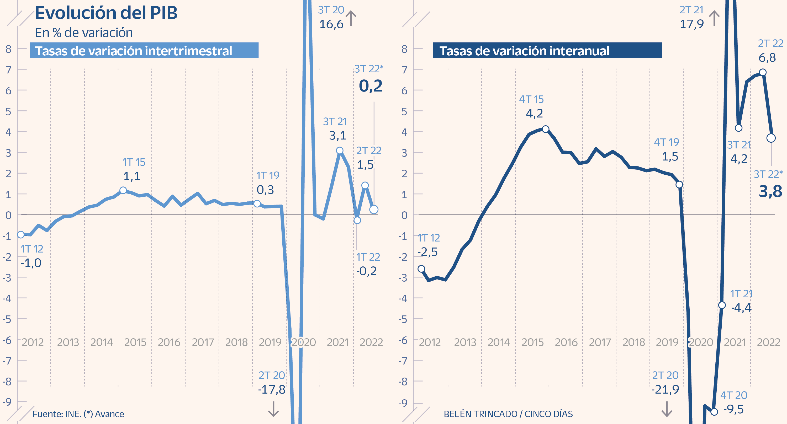
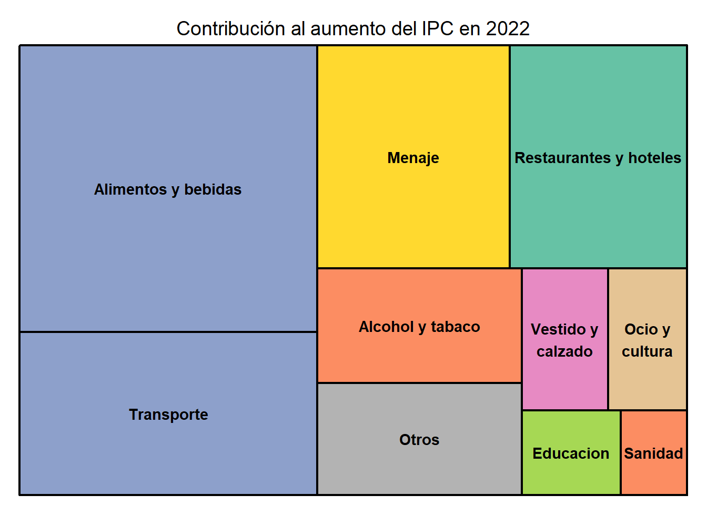
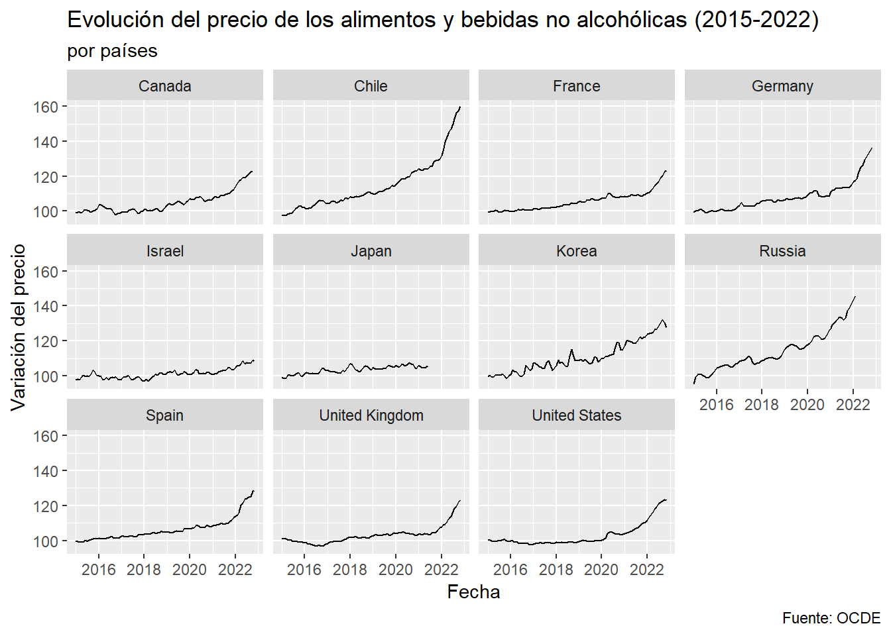
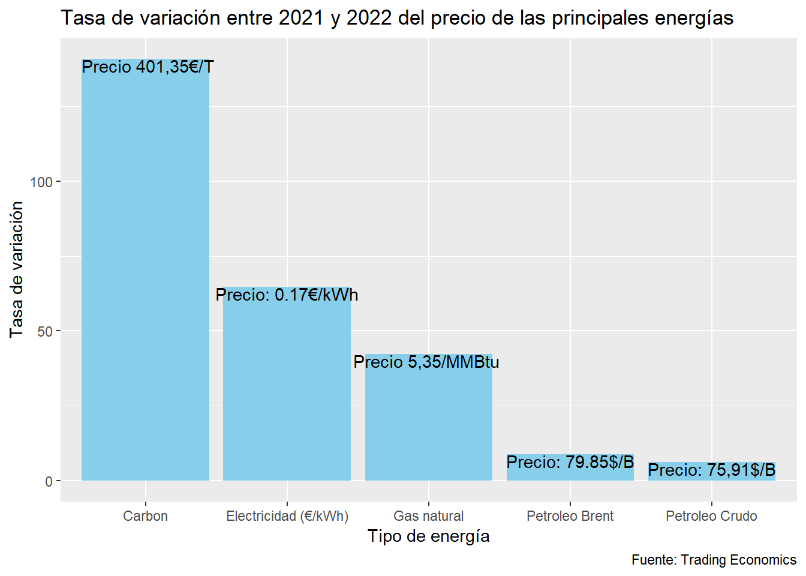
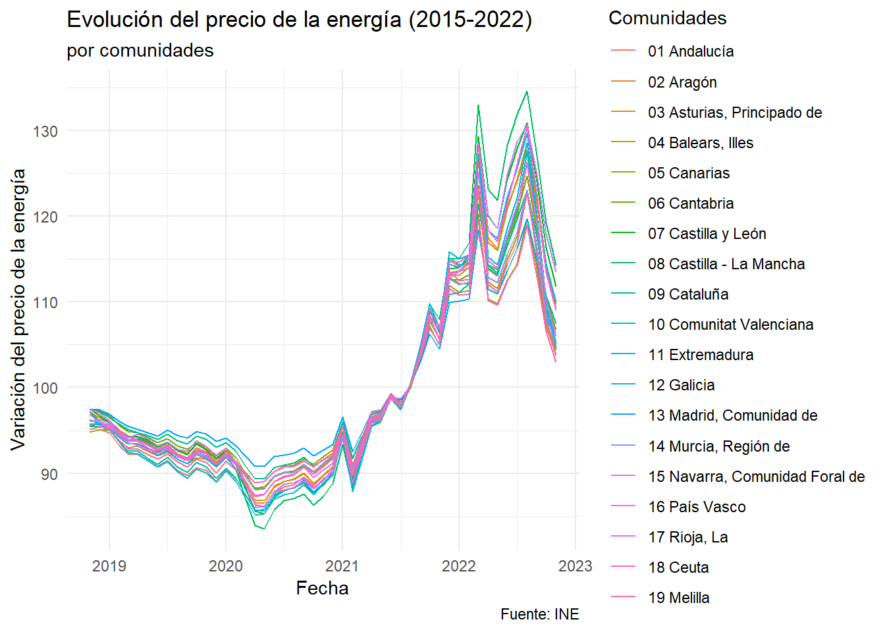
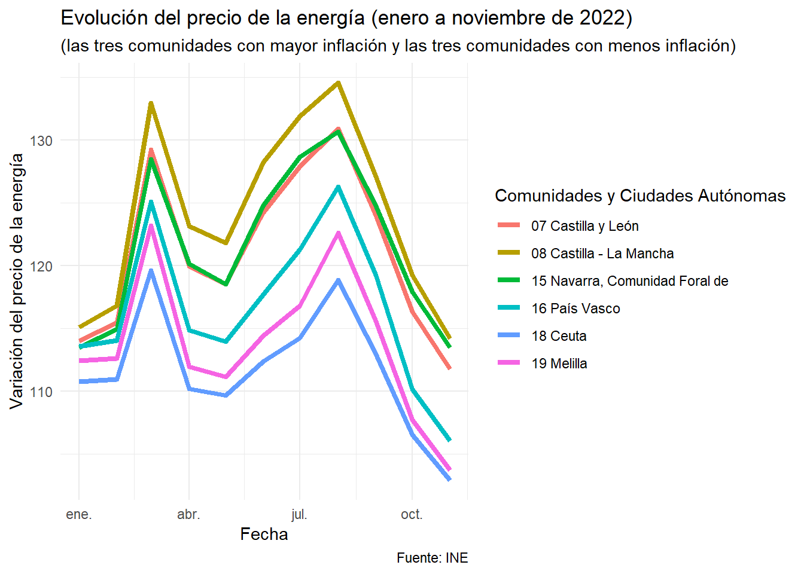

Análisis de la subida de precios sin precedentes que ha experimentado la economía mundial
trabajo BigData
Inflación
Autores/as
Sandra March (arazola@alumni.uv.es)
Alberto Cabrera (alcape4@alumni.uv,es)
Alegria Pintado (apinba@alumni.uv.es)
Fecha de publicación
23 de diciembre de 2022
1. Introducción
Para nuestro trabajo de Big Data hemos decidido hablar, como bien indica el título, de la incertidumbre que se está viviendo actualmente en la economía mundial con la evolución de los precios y dar una posible previsión para años posteriores. Hemos elegido el tema por ser de actualidad y tener gran relevancia internacional por las implicaciones y consecuencias que conlleva.
Empezamos comentando el contexto actual que está viviendo el planeta con dos gráficos: la evolución del PIB mundial y la evolución del IPC de varios paises a nivel internacional, para poder mostrar los efectos que se están dando en la economía global.
Una vez puestos en contexto, pasamos a centrarnos más en Europa y España, mostrando un gráfico de tasas de inflación en Europa, explicando los factores determinantes de esta subida de precios y los efectos que estos provocan. Después, nos focalizamos en España, viendo los componentes más importantes que han influido al aumento del IPC, así como las diferencias con Europa.
Para terminar, mencionamos los sectores que se han visto mas afectados en la economía en general: alimentos y energía, y la evolución que han tenido tanto en España como en el mundo. Finalmente, analizamos cuales pueden ser las previsiones futuras en base a la trayectoria de los últimos meses.
2. Contexto actual
Después de más de dos años de la crisis del COVID-19 y la invasión a Ucrania por parte de Rusia, nos encontramos en un punto de desaceleración de la actividad económica mundial. La previsión es que para este año la actividad mundial crezca tan solo un 2,7 %. La guerra de Ucrania está provocando un aumento considerable en el precio de las materias primas o la energía, lo que repercute en el precio final del producto y por ende disminuye el bienestar del consumidor. Todo esto, está provocando también condiciones financieras más restrictivas, un aumento de la inflación, así como una mayor incertidumbre política.
La OCDE continua recortando sus previsiones económicas para el próximo año, y considera que la prioridad número uno de gobiernos y bancos centrales debe ser la inflación. Además, la recuperación calificada como “la mayor crisis energética desde 1970”, tardará en llegar ya que para 2024 tampoco se espera un gran crecimiento.
IPC Mundial
Código
#GRAFICO DE LA EVOLUCION DEL IPC MUNDIALIPC2 <-read.csv("./Datos/IPC2.csv")#año base 2015 = 100IPC2 <- IPC2 %>%select(LOCATION, Time, Country, Value)IPC2 <- IPC2 %>%filter(LOCATION %in%c("CAN", "ESP", "FRA", "DEU", "JPN", "ISR", "GBR", "USA", "RUS", "KOR", "CHL", "RUS"))#- paso a fechaIPC2 <- IPC2 %>%mutate(time = lubridate::my(Time))#GRAFICO QUE SE MUEVE DEL IPCp <-ggplot(IPC2, aes(x = time, y = Value, color = Country, group = Country)) +geom_line() +geom_point(size =0.5) +labs(title ="Tasas de inflación del IPC (2015-2022) {frame_along}",subtitle ="(Año base: 2015 = 100)",caption ="Fuente: OCDE",x ="Año",y ="Inflación IPC") +geom_text(aes(label = LOCATION), nudge_x =14, size =3) +theme_minimal() +theme(legend.position ="right")+transition_reveal(time)p#MISMO GRAFICO SIN MOVERSEp2 <-ggplot(IPC2, aes(x = time, y = Value, color = Country, group = Country)) +geom_line(size =2) +labs(title ="Tasas de inflación del IPC (2015-2022)",subtitle ="(Año base: 2015 = 100)",caption ="Fuente: OCDE",x ="Año",y ="Inflación IPC") +theme_minimal() +theme(legend.position ="right")p2


3. Inflación en Europa
La inflación es el aumento general de los precios. En una economía de mercado los precios de los bienes y servicios es variable en el tiempo, existe inflación cuando el precio de estos se ve incrementado, dando como resultado la pérdida de poder adquistivo de la moneda.
La zona euro comenzó el 2021 con una inflación muy baja pero las restricciones de oferta inducidas por la pandemia, el repunte de la demanda mundial y del consumo de los hogares, el final de la reducción del IVA en Alemania o la subida de los precios de la energía hicieron que la inflación aumentara de forma acusada. La inflación general anual se situo en 2,6% en promedio, en 2021, en comparación con solo un 0,3% en 2020.
En diciembre de 2021 alcanzó el 5%. Además la inflación observada sorprendió varias veces al alza. Se esperaba que los factores que impulsaron el incremento de la inflación en 2021 desaparecieran en gran parte y disminuyera en 2022 pero la invasión rusa a ucrania acentuó el aumento.
En el diagrama de barras se observa la evolución de las tasas de inflación en Europa.
Cuyas causas de la inflación son la subida de precios de las materias primas y las energías y el umento del coste de transporte…, sumado a una política de reducciones de tipo de interés llevada a cabo por el presidente de Turquía ha hecho que haya una continua espiral inflacionista dando lugar a una hiperinflación.
Código
#Turquiamasinfla2 <- masinfla %>%filter(País %in%c("Turquia")) Bandera <-"https://www.banderas-mundo.es/data/flags/emoji/apple/160x160/tr.png"masinfla2 <- masinfla2 %>%add_column(Bandera)Tabla <- masinfla2 %>%gt()Tabla <- Tabla %>%tab_header(title =md("**1º PAÍS CON MÁS INFLACIÓN**"))Tabla <- Tabla %>%tab_options(heading.background.color ="#A52A2A") %>%tab_options(heading.title.font.size =15, column_labels.font.weight ="bold")Tabla <- Tabla %>% gt::text_transform(locations =cells_body(columns =c(Bandera)), fn =function(x) {gt::web_image(x, height =50)}) %>%cols_align(align ="center")Tabla
1º PAÍS CON MÁS INFLACIÓN
País
% Inflación
Bandera
Turquia
84.39
Moldavia
Debido a la crisis constitucional que se lleva viviendo en el país desde 2019, sumado a una crisis en el sector industrial del país, ha hecho que deban de importar la mayoría de sus productos , junto a la depreciación de su moneda en un 8,3% por lo que cada vez es más caro importar y por tanto el precio final es todavía mayor.
En los últimos años, la economía del país se ha vuelto más vulnerable y dependiente de factores externos, sumado a la invasión de Rusia, ha hecho que la inflación se dispare debido a la escasez de los productos básicos y energías.
Tres factores interrelacionados que han provocado la actual situación son: el enfrentamiento a perturbaciones recurrentes, que estas perturbaciones están traslandandose con mas fuerza a la inflación y, que están resultando ser persistentes debido a cambios estructurales en la economía.
En primer lugar, la economía de la zona del euro se ha visto afectada por una serie de perturbaciones sin precedentes, tanto por el lado de la demanda como de la oferta, lo que ha restringido la oferta agregada, al tiempo que ha dirigido la demanda a sectores con limitaciones de capacidad.
Adicionalmente y por causa de la pandemia se han sufrido confinamientos e interrupciones de la cadena de suministro. Recortes en la producción de energía y la invasión de Ucrania por parte de Rusia. La reapertura de la economía ha producido una rápida liberalización de la demanda embalsada, respaldada por la acumulación de exceso de ahorro. El resultado esta siendo una perturbación inflacionista intensa y persistente.
En segundo lugar, estas perturbaciones se están trasmitiendo de manera rápida e intensa a los precios. Una de las razones es que en esta ocasión las empresas no están absorbiendo parte de los aumentos de los costes para evitar que los consumidores experimenten grandes subidas de precios como en el pasado. Esta vez, las empresas mantienen y, en algunos sectores, incluso incrementan sus márgenes porque cuando la inflación es alta de forma generalizada y la oferta limitada es mas fácil para la empresa repercutir estos incrementos de los costes en los clientes.
El tercer factor que agrava esta situación son los cambios estructurales en la economía. Las perturbaciones provocadas por la pandemia y la guerra han creado un nuevo mapa mundial de las relaciones económicas. Y los puntos de inflexión económica en este nuevo mapa implicaran que algunas restricciones de oferta se prolongaran mas tiempo. Destacamos dos puntos:
La interrupción del suministro de gas causada por la invasión rusa. Las curvas de los mercados futuros apuntan a que los precios del gas continuaran subiendo durante algún tiempo, ya que los países europeos deberán pagar una prima para atraer gas natural licuado no contratado en sustitución del gas ruso. Asimismo, los efectos de sustitución encarecerán probablemente los precios de otras fuentes de energía. A mas largo plazo, tambien es probable que la guerra acelere la transición verde en Europa, incluido el cambio a las energías renovables, lo que en última instancia debería dar lugar a un descenso de los precios de la electricidad. Pero también podríamos observar una menor inversión en la producción de petróleo y gas durante la fase de transición, lo que ejercería presión al alza sobre los precios de los combustibles fósiles en un momento en el que la demanda de esos combustibles continúa siendo elevada.
En segundo lugar, observamos cambios en la naturaleza de la globalización y, en particular, el papel de China. Las disrupciones de oferta provocadas por la pandemia, las vulnerabilidades que ha puesto de manifiesto y el nuevo panorama geopolítico parecen conducir a una reevaluación de las cadenas globales de valor. Aunque el resultado no será una «desglobalización», cabe esperar que vuelvan a aparecer factores geopolíticos en las cadenas de suministro. Un análisis reciente señala que casi el 90 % de las empresas globales prevén regionalizar su producción en los próximos tres años. Esto reducirá probablemente la eficiencia y aumentará los costes, lo que podría crear presiones inflacionistas durante algún tiempo mientras se ajustan las cadenas de suministro.
Diferencias entre Europa y España
La inflación anual se está disparando en la Unión Europea. En octubre, la tasa del índice de precios de consumo (IPC) en la UE era de media un 11,5% superior a la de hace un año, según los datos de Eurostat. Desde el 5,6% que se registró en enero, este valor ha ido aumentando mes a mes. Sin embargo, a diferencia del resto de países de esta entidad de Europa, en España la tendencia de la inflación es diferente. Mientras que la inflación anual en nuestro país ha sido superior a la media de la UE en 7 de los primeros ocho meses del año, todos menos mayo, en los últimos dos meses este dato ha sido muy inferior a la media de los países de la Unión Europea. Así, en octubre, la inflación en nuestro país se situó cuatro puntos por debajo de la media comunitaria
#los datos de la x corresponden a los meses de 2022
4. consecuencias
Los efectos de una inflación elevada engloba distintos sectores, tanto a nivel financiero en la valoración de activos, la rentabilidad de inversiones, la gestion de ahorros familiares, el coste de financiación, etc. Como en la economia doméstica por la subida del precio de la luz, la gasolina o la cesta de la compra.
Algunas de las consecuencias mas destacadas son:
El aumento de los precios incide de forma directa en la población, que tienen que pagar mas por los mismos bienes y servicios. de esta forma se ve reducido su poder adquisitivo en la medida que la inflación crece. Además en muchos paises como consecuencia de este aumento inesperado de los precios, los salarios reales estan cayendo. La clase baja y la clase media de la población son las mas afectadas. Las familias se encuentran en un momento de profundo malestar económico.
La subida de los tipos de interés afecta directamente al coste de financiación por lo que determinan el coste de deuda en la mayoria de los hogares y empresas. Por esta razón el gasto mensual de las familias se ve incrementado y su nivel de vida disminuido.
Otra consecuencia ha sido respecto al PIB interanual que ha sufrido un severo frenazo de tres puntos, pasando de una tasa interanual del 6,8% a un 3,8%, según el dato adelantado por el INE. En términos trimestrales, la actividad ha pasado de crecer un 1,5% en el segundo trimestre a apenas un 0,2% en el tercero

Por otro lado, se reduce el valor real de las deudas. en España, el sector público, con una deuda del 113% del PIB, resulta el gran beneficiado por la inflación, y eso a pesar de que suban los tipos de interés.
También la inflación reduce los márgenes de las empresas y sus flujos de tesorería, lo que unido al encarecimiento del crédito reduce la inversión empresarial
.
5. Sectores
La inflación mundial ha provocado que todos los sectores, en mayor o menor medida, hayan tenido que aumentar sus costes y por tanto los precios finales que llegan al consumidor. Los sectores que consideramos más importantes para la economía global son el de los alimentos y el de la energía, que comentaremos con más profundidad más adelante.
Centrándonos ahora en España, tenemos la siguiente tabla que nos muestra cómo ha repercutido cada sector en el que se divide el IPC general en este año:
Código
sectorcontri <-read.csv("./Datos/2022a.csv")names(sectorcontri) =c("Sector", "Inflacion", "Mes")a3 <-treemap(sectorcontri,index="Sector",vSize="Inflacion",type="index",title="Contribución al aumento del IPC en 2022",palette="Set2")

Como vemos, los tres sectores que más le han afectado en comparación al año anterior esta subida de precios ha sido al de la alimentación, transporte y menaje.
5.1 Alimentos
El sector de los alimentos es uno de los mas perjudicados por la subida de precios. En octubre de 2022 los alimentos tuvieron un fuerte incremento del 15,4% en términos interanuales, una tasa seis decimas superior a la del mes anterior y la mas alta desde el comienzo de la serie estadística para este grupo en enero de 1994. El banco mundial asegura que, desagregándo la subida de la inflación general, el precio de la alimentación ha crecido un 2,7% en términos reales.
Destacan el encarecimiento en comparación anual de las legumbres y hortalizas (17,9%), la leche (25,3%), el queso (16,1%), los huevos (23,6%), y la carne (ave 18,1%, vacuno 14,7% y porcino 11,2%). Como podemos ver corresponden a productos basicos de la cesta de la compra. La demanda de los alimentos no es flexible y los compradores a pesar de tratar de modificar sus dietas o hábitos de consumo para hacer frente al aumento de los costes, no pueden prescindir de estos productos de primera necesidad.
Código
IPCALIMENTOS <-read.csv("./Datos/IPC3.csv")IPCALIMENTOS <- IPCALIMENTOS %>%select(-SUBJECT, -Subject, -MEASURE, -Measure, -FREQUENCY, -Frequency, -Unit.Code, -Unit, -PowerCode.Code)IPCALIMENTOS <- IPCALIMENTOS %>%select(-PowerCode, -Reference.Period.Code, -Reference.Period)IPCALIMENTOS <- IPCALIMENTOS%>%filter(LOCATION %in%c("CAN", "ESP", "FRA", "DEU", "JPN", "ISR", "GBR", "USA", "RUS", "KOR", "CHL", "RUS"))IPCALIMENTOS <- IPCALIMENTOS %>%mutate(time = lubridate::my(Time))p10 <-ggplot(IPCALIMENTOS) +geom_line(aes(x = time, y = Value)) +facet_wrap(vars(Country)) +labs(title ="Evolución del precio de los alimentos y bebidas no alcohólicas (2015-2022)",subtitle ="por países",caption ="Fuente: OCDE",x ="Fecha",y ="Variación del precio")p10

Algunos de los factores que han contribuido al aumento del coste de los alimentos son:
Acontecimientos mundiales, como la guerra de Ucrania, que afecta a los costes del trigo y otros productos básicos.
En relación con el primer punto, La situación de bloqueo que esta experimentando el comercio mundial. La razón es que Rusia y Bielorrusia que son piezas fundamentales para la producción de fertilizantes han sido sancionadas por la UE. Además han aumentado las restricciones a las exportaciones debido al conflicto por lo que los productos son mas caros. Especialmente esta afectando a la producción agrícola.
La escasez y los precios record del gas natural tambien han supuesto la reduccion de la capacidad productiva de Europa lo que ha supuesto de nuevo el aumento de los costes y la dificultad para competir en el mercado.
El impacto de las catástrofes naturales como sequias o la gripe aviar, que ha limitado la oferta de huevos y pavos.
Finalmente, el aumento de los precios de la energía que aumentan los costes de producción y distribución y, consecuentemente, se trasladan a los productos de consumo.
5.2 Energia
La energía, el motor principal de cualquier economía, ha tenido un aumento muy considerable de precio en estos últimos meses debido al estallido del conflicto en Ucrania que ha vuelto a poner patas arriba el mercado energético y la tendencia del precio de la energía. Mientras, vivimos con la incertidumbre de si Rusia puede cortar el grifo del gas en Europa. El problema reside en la duración del conflicto en Ucrania y la clara dependencia energética que existe. Dependiendo del tiempo en el que duren las amenazas, la tendencia en los precios de la energía variará de una forma u otra. Sin embargo, parece que poco a poco estas tasas de inflación están disminuyendo, es decir, siguen aumentando los precios pero más lentamente (por ahora).
En el siguiente gráfico, vemos la evolución interanual del precio de las energías más importantes:
Código
precios <-read_excel("./Datos/Libro2.xlsx")precios <- precios %>%mutate(Valor =case_when( Energia =="Petroleo Brent"~"Precio: 79.85$/B", Energia =="Petroleo Crudo"~"Precio: 75,91$/B", Energia =="Carbon"~" Precio 401,35€/T", Energia =="Gas natural"~"Precio 5,35/MMBtu ", Energia =="Electricidad (€/kWh)"~"Precio: 0.17€/kWh")) pp1 <-ggplot(precios, aes(x = Energia, y = Variacion)) +geom_bar(stat ="identity" , fill ="#87CEEB") +geom_text(aes(label = Valor), vjust =1) +labs(title ="Tasa de variación entre 2021 y 2022 del precio de las principales energías",x ="Tipo de energía",y ="Tasa de variación",caption ="Fuente: Trading Economics")pp1

Como vemos, el carbón es la materia prima que más ha variado su precio (más de un 140%), debido a que si bien su uso se estaba cada vez reduciendo más al ser un material que contamina mucho, tras la crisis energética muchos países han vuelto a utilizar carbón para poder seguir produciendo energía a un coste bajo.
Por otro lado, entrado el invierno, se esperaba que el precio del gas se disparase al igual que lo lleva haciendo el de la electricidad. Sin embargo, a pesar de las continuas subidas de precios el precio del gas parece que no solo ha parado de aumentar, sino que está disminuyendo. Esto se debe a que si el precio aumentó fue en gran parte también debido a que en los meses anteriores, Europa y España preocupados por el posible racionamiento del gas por la guerra de Ucrania, comenzaron a comprar para poder rellenar las reservas en caso de emergencia. Ahora con las reservas llenas, la demanda ha disminuido y por tanto el precio comienza a disminuir.
Por último, el petróleo y la gasolina podemos observar como también continúan disminuyendo. Sabemos que la oferta no ha aumentado, por tanto esta disminución de precio también se debe a una reducción de la demanda mundial por parte de los países importadores. Esto se debe a que China, con sus políticas restrictivas por el coronavirus, sumado a que Europa y Estados Unidos han sufrido un enfriamiento en sus economías, hacen que se esté frenando su uso.
Código
energiaCCAA <-read_excel("./Datos/energia.xlsx")energiaCCAA <- energiaCCAA %>%mutate(time = lubridate::ym(Periodo)) %>%mutate(year = lubridate::year(time)) %>%mutate(mes = lubridate::month(time))energiaCCAA <- energiaCCAA %>%select(-`Grupos ECOICOP`, -`Tipo de dato`)names(energiaCCAA) =c("Comunidades", "Periodo", "Variacion_IPC", "Fecha", "Año", "Mes")p8 <-ggplot(energiaCCAA) +geom_line(aes(x = Fecha, y = Variacion_IPC, color = Comunidades, group = Comunidades)) +labs(title ="Evolución del precio de la energía (2015-2022)",subtitle ="por comunidades",caption ="Fuente: INE",x ="Fecha",y ="Variación del precio de la energía") +theme_minimal() p8

Como vemos, todas siguen prácticamente la misma tendencia: dos picos muy elevados en menos de un año, con un cambio de tendencia general a la baja de la evolución del precio.
Para terminar con este apartado, vamos a mostrar las tres comunidades con una evolución de la inflación de la energía más alta y las tres más bajas:
Código
energiaCCAA2 <-read_excel("./Datos/ccaaaño.xlsx")energiaCCAA2 <- energiaCCAA2[, -2]energiaCCAA2 <- energiaCCAA2 %>%mutate(time = lubridate::ym(Periodo)) %>%mutate(year = lubridate::year(time)) %>%mutate(mes = lubridate::month(time))names(energiaCCAA2) =c("Comunidades y Ciudades Autónomas", "Periodo", "Variacion_IPC", "Fecha", "Año", "Mes")p9 <-ggplot(energiaCCAA2, aes(x = Fecha, y = Variacion_IPC, color =`Comunidades y Ciudades Autónomas`, group =`Comunidades y Ciudades Autónomas`)) +geom_line(size =1.5) +labs(title ="Evolución del precio de la energía (enero a noviembre de 2022)",subtitle ="(las tres comunidades con mayor inflación y las tres comunidades con menos inflación)",caption ="Fuente: INE",x ="Fecha",y ="Variación del precio de la energía") +theme_minimal() +theme(legend.position ="right")p9

6. Previsión futura
En conclusión, la economía se enfrenta a importantes desafíos. El mundo se está recuperando de la mayor crisis energética desde la década de 1970. El shock energético ha elevado la inflación a niveles no vistos en muchas décadas y está reduciendo el crecimiento económico en todo el mundo. En las nuevas Perspectivas Económicas de la OCDE, se pronostica que el crecimiento mundial disminuirá a 2.2% en 2023 y se recuperará a un relativamente modesto 2.7% en 2024. Asia será el principal motor de crecimiento en 2023 y 2024, mientras que Europa, América del Norte y América del Sur experimentarán un crecimiento muy bajo debido a una brusca desaceleración.
Existe una gran incertidumbre sobre el futuro. A pesar de las previsiones relativamente positivas que los expertos han llevado a cabo, la escasez de suministro de energía podría provocar un mayor aumento de los precios. Además. las medidas llevadas a cabo para frenar la inflación como han sido las subidas de las tasas de interés estan aumentando las debilidades financieras. Y la crisis en el sector de los alimentos empobrece los hogares de bajos ingresos e incrementa la inseguridad alimentaria, además del descenso de la confianza por un débil crecimiento de los ingresos reales que dificultan aún más la situación.
En cuanto a la inflación se prevé que aunque siga siendo elevada en 2023 se vaya moderando mediante el ya aplicado endurecimiento de la política monetaria y la desaceleración del crecimiento.
centrándonos en España, se proyecta que la actividad crecerá un 1,3% en 2023 y un 1,7% en 2024, después de aumentar un 4,7% en 2022. La alta inflación frenará el poder adquisitivo de los hogares, pero los ahorros acumulados durante la pandemia apoyarán el consumo. Con el deterioro de las perspectivas de demanda y el aumento de los costos de financiamiento, se espera que la inversión privada siga siendo moderada. La desaceleración en los principales socios comerciales afectará las exportaciones. La inflación alcanzará un máximo del 8,6% en 2022 y luego disminuirá al 4,8% en 2023 y 2024.
7. Bibliografía
Banco Mundial – Desarrollo sostenible, resiliencia y crecimiento económico. (s. f.). World Bank. https://www.bancomundial.org/es/home
INE - Instituto Nacional de Estadstica. (s. f.). INE. Instituto Nacional de Estadística. INE. https://www.ine.es/index.htm
OECD data. (s. f.). theOECD. https://data.oecd.org/
TRADING ECONOMICS | 20 million INDICATORS FROM 196 COUNTRIES. (s. f.). https://tradingeconomics.com/
Data. (s. f.). Eurostat. https://ec.europa.eu/eurostat/web/main/data
Ejecutar el código
---title: "Incertidumbre por la escalada de precios"description: | Análisis de la subida de precios sin precedentes que ha experimentado la economía mundialauthor:- name: Sandra March (arazola@alumni.uv.es) - name: Alberto Cabrera (alcape4@alumni.uv,es) - name: Alegria Pintado (apinba@alumni.uv.es) date: 2022-12-23 categories: [trabajo BigData, Inflación] #--image: "./imagenes/fotopais.jpg"title-block-banner: true #- {true, false, "green","#AA0000"}title-block-banner-color: "#F0FFFF;" #-"#FFFFFF" toc: truetoc-location: lefttoc-depth: 3smooth-scroll: trueformat: html: backgroundcolor: "#F0FFFF" #embed-resources: true link-external-newwindow: true #css: ./assets/my_css_file.css #- CUIDADO!!!!code-tools: truecode-link: true---```{r chunk-setup, include = FALSE}knitr::opts_chunk$set(echo =TRUE, eval =TRUE, message =FALSE, warning =FALSE,collapse =TRUE)library(dplyr)library(tidyverse)library(readxl)library(dygraphs)library(treemap)library(DT)library(ggplot2)library(gt)library(rmdformats)library(sf)library(ggplot2)library(lubridate)library(transformr)library(gganimate)```# 1. IntroducciónPara nuestro trabajo de Big Data hemos decidido hablar, como bien indica el título, de la incertidumbre que se está viviendo actualmente en la economía mundial con la evolución de los precios y dar una posible previsión para años posteriores. Hemos elegido el tema por ser de actualidad y tener gran relevancia internacional por las implicaciones y consecuencias que conlleva.Empezamos comentando el contexto actual que está viviendo el planeta con dos gráficos: la evolución del PIB mundial y la evolución del IPC de varios paises a nivel internacional, para poder mostrar los efectos que se están dando en la economía global.Una vez puestos en contexto, pasamos a centrarnos más en Europa y España, mostrando un gráfico de tasas de inflación en Europa, explicando los factores determinantes de esta subida de precios y los efectos que estos provocan. Después, nos focalizamos en España, viendo los componentes más importantes que han influido al aumento del IPC, así como las diferencias con Europa.Para terminar, mencionamos los sectores que se han visto mas afectados en la economía en general: alimentos y energía, y la evolución que han tenido tanto en España como en el mundo. Finalmente, analizamos cuales pueden ser las previsiones futuras en base a la trayectoria de los últimos meses.# 2. Contexto actualDespués de más de dos años de la crisis del COVID-19 y la invasión a Ucrania por parte de Rusia, nos encontramos en un punto de desaceleración de la actividad económica mundial. La previsión es que para este año la actividad mundial crezca tan solo un 2,7 %. La guerra de Ucrania está provocando un aumento considerable en el precio de las materias primas o la energía, lo que repercute en el precio final del producto y por ende disminuye el bienestar del consumidor. Todo esto, está provocando también condiciones financieras más restrictivas, un aumento de la inflación, así como una mayor incertidumbre política.```{r}prevision <-read_excel("./Datos/prevision.xlsx")prevision <- prevision %>%select(-Periodo)names(prevision) =c("Año", "% Variación")presAnnotation <-function(dygraph, x, text) { dygraph %>%dyAnnotation(x, text, attachAtBottom =TRUE, width =60)}dygraph(prevision, main ="VARIACIÓN PORCENTUAL INTERANUAL DEL PIB MUNDIAL",ylab ="% VARIACIÓN") %>%dyOptions(pointShape ="plus", pointSize =100, colors ="#5F9EA0", stackedGraph =TRUE) %>%dyLegend(show ="follow") %>%presAnnotation("2020", text ="GUERRA") %>%dyShading(from ="2019", to ="2024")```La OCDE continua recortando sus previsiones económicas para el próximo año, y considera que la prioridad número uno de gobiernos y bancos centrales debe ser la inflación. Además, la recuperación calificada como "la mayor crisis energética desde 1970", tardará en llegar ya que para 2024 tampoco se espera un gran crecimiento.### IPC Mundial```{r}#GRAFICO DE LA EVOLUCION DEL IPC MUNDIALIPC2 <-read.csv("./Datos/IPC2.csv")#año base 2015 = 100IPC2 <- IPC2 %>%select(LOCATION, Time, Country, Value)IPC2 <- IPC2 %>%filter(LOCATION %in%c("CAN", "ESP", "FRA", "DEU", "JPN", "ISR", "GBR", "USA", "RUS", "KOR", "CHL", "RUS"))#- paso a fechaIPC2 <- IPC2 %>%mutate(time = lubridate::my(Time))#GRAFICO QUE SE MUEVE DEL IPCp <-ggplot(IPC2, aes(x = time, y = Value, color = Country, group = Country)) +geom_line() +geom_point(size =0.5) +labs(title ="Tasas de inflación del IPC (2015-2022) {frame_along}",subtitle ="(Año base: 2015 = 100)",caption ="Fuente: OCDE",x ="Año",y ="Inflación IPC") +geom_text(aes(label = LOCATION), nudge_x =14, size =3) +theme_minimal() +theme(legend.position ="right")+transition_reveal(time)p#MISMO GRAFICO SIN MOVERSEp2 <-ggplot(IPC2, aes(x = time, y = Value, color = Country, group = Country)) +geom_line(size =2) +labs(title ="Tasas de inflación del IPC (2015-2022)",subtitle ="(Año base: 2015 = 100)",caption ="Fuente: OCDE",x ="Año",y ="Inflación IPC") +theme_minimal() +theme(legend.position ="right")p2```# 3. Inflación en EuropaLa inflación es el aumento general de los precios. En una economía de mercado los precios de los bienes y servicios es variable en el tiempo, existe inflación cuando el precio de estos se ve incrementado, dando como resultado la pérdida de poder adquistivo de la moneda.La zona euro comenzó el 2021 con una inflación muy baja pero las restricciones de oferta inducidas por la pandemia, el repunte de la demanda mundial y del consumo de los hogares, el final de la reducción del IVA en Alemania o la subida de los precios de la energía hicieron que la inflación aumentara de forma acusada. La inflación general anual se situo en 2,6% en promedio, en 2021, en comparación con solo un 0,3% en 2020.En diciembre de 2021 alcanzó el 5%. Además la inflación observada sorprendió varias veces al alza. Se esperaba que los factores que impulsaron el incremento de la inflación en 2021 desaparecieran en gran parte y disminuyera en 2022 pero la invasión rusa a ucrania acentuó el aumento.En el diagrama de barras se observa la evolución de las tasas de inflación en Europa.```{r}GRAFICO_INFLACION_ <-read_excel("./Datos/GRAFICOINFLACION.xlsx")names(GRAFICO_INFLACION_) <-c("Paises", "Variacion_anual")View(GRAFICO_INFLACION_)grafico_inflacion <-ggplot(GRAFICO_INFLACION_, aes(x=Variacion_anual, y=Paises)) +geom_bar(stat ="identity") +ggtitle("Evolución tasas de inflación en la UE") +labs(caption ="Fuente: Eurostat",x ="Variación anual",y ="Países") +theme(plot.subtitle =element_text(family ="sans"),plot.caption =element_text(family ="sans"),axis.title =element_text(family ="sans"),plot.title =element_text(family ="sans"),panel.background =element_rect(fill ="#FFDEAD"),plot.background =element_rect(fill ="#FA8072"))grafico_inflacion```Si hacemos referencia a los países de Europa con mayor inflación en 2022 son los siguientes:```{r}library(readxl)masinfla <-read_excel("./Datos/Libro1.xlsx")names(masinfla) =c("País", "% Inflación")```1. **Turquía**Cuyas causas de la inflación son la subida de precios de las materias primas y las energías y el umento del coste de transporte..., sumado a una política de reducciones de tipo de interés llevada a cabo por el presidente de Turquía ha hecho que haya una continua espiral inflacionista dando lugar a una hiperinflación.```{r}#Turquiamasinfla2 <- masinfla %>%filter(País %in%c("Turquia")) Bandera <-"https://www.banderas-mundo.es/data/flags/emoji/apple/160x160/tr.png"masinfla2 <- masinfla2 %>%add_column(Bandera)Tabla <- masinfla2 %>%gt()Tabla <- Tabla %>%tab_header(title =md("**1º PAÍS CON MÁS INFLACIÓN**"))Tabla <- Tabla %>%tab_options(heading.background.color ="#A52A2A") %>%tab_options(heading.title.font.size =15, column_labels.font.weight ="bold")Tabla <- Tabla %>% gt::text_transform(locations =cells_body(columns =c(Bandera)), fn =function(x) {gt::web_image(x, height =50)}) %>%cols_align(align ="center")Tabla```2. **Moldavia**Debido a la crisis constitucional que se lleva viviendo en el país desde 2019, sumado a una crisis en el sector industrial del país, ha hecho que deban de importar la mayoría de sus productos , junto a la depreciación de su moneda en un 8,3% por lo que cada vez es más caro importar y por tanto el precio final es todavía mayor.```{r}masinfla3 <- masinfla %>%filter(País %in%c("Moldavia")) Bandera <-"https://www.banderas-mundo.es/data/flags/emoji/apple/160x160/md.png"masinfla3 <- masinfla3 %>%add_column(Bandera)Tabla2 <- masinfla3 %>%gt()Tabla2 <- Tabla2 %>%tab_header(title =md("**2º PAÍS CON MÁS INFLACIÓN**"))Tabla2 <- Tabla2 %>%tab_options(heading.background.color ="#FFD700") %>%tab_options(heading.title.font.size =15, column_labels.font.weight ="bold")Tabla2 <- Tabla2 %>% gt::text_transform(locations =cells_body(columns =c(Bandera)), fn =function(x) {gt::web_image(x, height =50)}) %>%cols_align(align ="center")Tabla2```3. **Ucranía**En los últimos años, la economía del país se ha vuelto más vulnerable y dependiente de factores externos, sumado a la invasión de Rusia, ha hecho que la inflación se dispare debido a la escasez de los productos básicos y energías.```{r}masinfla4 <- masinfla %>%filter(País %in%c("Ucrania")) Bandera <-"https://www.banderas-mundo.es/data/flags/emoji/apple/160x160/ua.png"masinfla4 <- masinfla4 %>%add_column(Bandera)Tabla3 <- masinfla4 %>%gt()Tabla3 <- Tabla3 %>%tab_header(title =md("**3º PAÍS CON MÁS INFLACIÓN**"))Tabla3 <- Tabla3 %>%tab_options(heading.background.color ="#008B8B") %>%tab_options(heading.title.font.size =15, column_labels.font.weight ="bold")Tabla3 <- Tabla3 %>% gt::text_transform(locations =cells_body(columns =c(Bandera)), fn =function(x) {gt::web_image(x, height =50)}) %>%cols_align(align ="center")Tabla3```# 4. Factores determinantes de la inflaciónTres factores interrelacionados que han provocado la actual situación son: el enfrentamiento a perturbaciones recurrentes, que estas perturbaciones están traslandandose con mas fuerza a la inflación y, que están resultando ser persistentes debido a cambios estructurales en la economía.1. En primer lugar, la economía de la zona del euro se ha visto afectada por una serie de perturbaciones sin precedentes, tanto por el lado de la demanda como de la oferta, lo que ha restringido la oferta agregada, al tiempo que ha dirigido la demanda a sectores con limitaciones de capacidad.Adicionalmente y por causa de la pandemia se han sufrido confinamientos e interrupciones de la cadena de suministro. Recortes en la producción de energía y la invasión de Ucrania por parte de Rusia. La reapertura de la economía ha producido una rápida liberalización de la demanda embalsada, respaldada por la acumulación de exceso de ahorro. El resultado esta siendo una perturbación inflacionista intensa y persistente.2. En segundo lugar, estas perturbaciones se están trasmitiendo de manera rápida e intensa a los precios. Una de las razones es que en esta ocasión las empresas no están absorbiendo parte de los aumentos de los costes para evitar que los consumidores experimenten grandes subidas de precios como en el pasado. Esta vez, las empresas mantienen y, en algunos sectores, incluso incrementan sus márgenes porque cuando la inflación es alta de forma generalizada y la oferta limitada es mas fácil para la empresa repercutir estos incrementos de los costes en los clientes.3. El tercer factor que agrava esta situación son los cambios estructurales en la economía. Las perturbaciones provocadas por la pandemia y la guerra han creado un nuevo mapa mundial de las relaciones económicas. Y los puntos de inflexión económica en este nuevo mapa implicaran que algunas restricciones de oferta se prolongaran mas tiempo. Destacamos dos puntos:- La interrupción del suministro de gas causada por la invasión rusa. Las curvas de los mercados futuros apuntan a que los precios del gas continuaran subiendo durante algún tiempo, ya que los países europeos deberán pagar una prima para atraer gas natural licuado no contratado en sustitución del gas ruso. Asimismo, los efectos de sustitución encarecerán probablemente los precios de otras fuentes de energía. A mas largo plazo, tambien es probable que la guerra acelere la transición verde en Europa, incluido el cambio a las energías renovables, lo que en última instancia debería dar lugar a un descenso de los precios de la electricidad. Pero también podríamos observar una menor inversión en la producción de petróleo y gas durante la fase de transición, lo que ejercería presión al alza sobre los precios de los combustibles fósiles en un momento en el que la demanda de esos combustibles continúa siendo elevada.- En segundo lugar, observamos cambios en la naturaleza de la globalización y, en particular, el papel de China. Las disrupciones de oferta provocadas por la pandemia, las vulnerabilidades que ha puesto de manifiesto y el nuevo panorama geopolítico parecen conducir a una reevaluación de las cadenas globales de valor. Aunque el resultado no será una «desglobalización», cabe esperar que vuelvan a aparecer factores geopolíticos en las cadenas de suministro. Un análisis reciente señala que casi el 90 % de las empresas globales prevén regionalizar su producción en los próximos tres años. Esto reducirá probablemente la eficiencia y aumentará los costes, lo que podría crear presiones inflacionistas durante algún tiempo mientras se ajustan las cadenas de suministro.## Diferencias entre Europa y EspañaLa inflación anual se está disparando en la Unión Europea. En octubre, la tasa del índice de precios de consumo (IPC) en la UE era de media un 11,5% superior a la de hace un año, según los datos de Eurostat. Desde el 5,6% que se registró en enero, este valor ha ido aumentando mes a mes. Sin embargo, a diferencia del resto de países de esta entidad de Europa, en España la tendencia de la inflación es diferente. Mientras que la inflación anual en nuestro país ha sido superior a la media de la UE en 7 de los primeros ocho meses del año, todos menos mayo, en los últimos dos meses este dato ha sido muy inferior a la media de los países de la Unión Europea. Así, en octubre, la inflación en nuestro país se situó cuatro puntos por debajo de la media comunitaria```{r}#Grafico IPC Espaá/Union europealibrary(readxl)grafico_ipc_2_ <-read_excel("./Datos/graficoipcue.xlsx")names(grafico_ipc_2_) =c("Periodo", "España", "Unión Europea")dygraph(grafico_ipc_2_, main ="Evolución del IPC 2022") %>%dyAxis("x", label ="Meses") %>%dyAxis("y", label ="Variación IPC")#los datos de la x corresponden a los meses de 2022```# 4. consecuenciasLos efectos de una inflación elevada engloba distintos sectores, tanto a nivel financiero en la valoración de activos, la rentabilidad de inversiones, la gestion de ahorros familiares, el coste de financiación, etc. Como en la economia doméstica por la subida del precio de la luz, la gasolina o la cesta de la compra.Algunas de las consecuencias mas destacadas son:- El aumento de los precios incide de forma directa en la población, que tienen que pagar mas por los mismos bienes y servicios. de esta forma se ve reducido su poder adquisitivo en la medida que la inflación crece. Además en muchos paises como consecuencia de este aumento inesperado de los precios, los salarios reales estan cayendo. La clase baja y la clase media de la población son las mas afectadas. Las familias se encuentran en un momento de profundo malestar económico.- La subida de los tipos de interés afecta directamente al coste de financiación por lo que determinan el coste de deuda en la mayoria de los hogares y empresas. Por esta razón el gasto mensual de las familias se ve incrementado y su nivel de vida disminuido.- Otra consecuencia ha sido respecto al PIB interanual que ha sufrido un severo frenazo de tres puntos, pasando de una tasa interanual del 6,8% a un 3,8%, según el dato adelantado por el INE. En términos trimestrales, la actividad ha pasado de crecer un 1,5% en el segundo trimestre a apenas un 0,2% en el tercero- Por otro lado, se reduce el valor real de las deudas. en España, el sector público, con una deuda del 113% del PIB, resulta el gran beneficiado por la inflación, y eso a pesar de que suban los tipos de interés.- También la inflación reduce los márgenes de las empresas y sus flujos de tesorería, lo que unido al encarecimiento del crédito reduce la inversión empresarial .# 5. SectoresLa inflación mundial ha provocado que todos los sectores, en mayor o menor medida, hayan tenido que aumentar sus costes y por tanto los precios finales que llegan al consumidor. Los sectores que consideramos más importantes para la economía global son el de los alimentos y el de la energía, que comentaremos con más profundidad más adelante.Centrándonos ahora en España, tenemos la siguiente tabla que nos muestra cómo ha repercutido cada sector en el que se divide el IPC general en este año:```{r}sectorcontri <-read.csv("./Datos/2022a.csv")names(sectorcontri) =c("Sector", "Inflacion", "Mes")a3 <-treemap(sectorcontri,index="Sector",vSize="Inflacion",type="index",title="Contribución al aumento del IPC en 2022",palette="Set2")```Como vemos, los tres sectores que más le han afectado en comparación al año anterior esta subida de precios ha sido al de la alimentación, transporte y menaje.## **5.1 Alimentos**El sector de los alimentos es uno de los mas perjudicados por la subida de precios. En octubre de 2022 los alimentos tuvieron un fuerte incremento del 15,4% en términos interanuales, una tasa seis decimas superior a la del mes anterior y la mas alta desde el comienzo de la serie estadística para este grupo en enero de 1994. El banco mundial asegura que, desagregándo la subida de la inflación general, el precio de la alimentación ha crecido un 2,7% en términos reales.Destacan el encarecimiento en comparación anual de las legumbres y hortalizas (17,9%), la leche (25,3%), el queso (16,1%), los huevos (23,6%), y la carne (ave 18,1%, vacuno 14,7% y porcino 11,2%). Como podemos ver corresponden a productos basicos de la cesta de la compra. La demanda de los alimentos no es flexible y los compradores a pesar de tratar de modificar sus dietas o hábitos de consumo para hacer frente al aumento de los costes, no pueden prescindir de estos productos de primera necesidad.```{r}IPCALIMENTOS <-read.csv("./Datos/IPC3.csv")IPCALIMENTOS <- IPCALIMENTOS %>%select(-SUBJECT, -Subject, -MEASURE, -Measure, -FREQUENCY, -Frequency, -Unit.Code, -Unit, -PowerCode.Code)IPCALIMENTOS <- IPCALIMENTOS %>%select(-PowerCode, -Reference.Period.Code, -Reference.Period)IPCALIMENTOS <- IPCALIMENTOS%>%filter(LOCATION %in%c("CAN", "ESP", "FRA", "DEU", "JPN", "ISR", "GBR", "USA", "RUS", "KOR", "CHL", "RUS"))IPCALIMENTOS <- IPCALIMENTOS %>%mutate(time = lubridate::my(Time))p10 <-ggplot(IPCALIMENTOS) +geom_line(aes(x = time, y = Value)) +facet_wrap(vars(Country)) +labs(title ="Evolución del precio de los alimentos y bebidas no alcohólicas (2015-2022)",subtitle ="por países",caption ="Fuente: OCDE",x ="Fecha",y ="Variación del precio")p10```Algunos de los factores que han contribuido al aumento del coste de los alimentos son:- Acontecimientos mundiales, como la guerra de Ucrania, que afecta a los costes del trigo y otros productos básicos.- En relación con el primer punto, La situación de bloqueo que esta experimentando el comercio mundial. La razón es que Rusia y Bielorrusia que son piezas fundamentales para la producción de fertilizantes han sido sancionadas por la UE. Además han aumentado las restricciones a las exportaciones debido al conflicto por lo que los productos son mas caros. Especialmente esta afectando a la producción agrícola.- La escasez y los precios record del gas natural tambien han supuesto la reduccion de la capacidad productiva de Europa lo que ha supuesto de nuevo el aumento de los costes y la dificultad para competir en el mercado.- El impacto de las catástrofes naturales como sequias o la gripe aviar, que ha limitado la oferta de huevos y pavos.- Finalmente, el aumento de los precios de la energía que aumentan los costes de producción y distribución y, consecuentemente, se trasladan a los productos de consumo.## **5.2 Energia**La energía, el motor principal de cualquier economía, ha tenido un aumento muy considerable de precio en estos últimos meses debido al estallido del conflicto en Ucrania que ha vuelto a poner patas arriba el mercado energético y la tendencia del precio de la energía. Mientras, vivimos con la incertidumbre de si Rusia puede cortar el grifo del gas en Europa. El problema reside en la duración del conflicto en Ucrania y la clara dependencia energética que existe. Dependiendo del tiempo en el que duren las amenazas, la tendencia en los precios de la energía variará de una forma u otra. Sin embargo, parece que poco a poco estas tasas de inflación están disminuyendo, es decir, siguen aumentando los precios pero más lentamente (por ahora).En el siguiente gráfico, vemos la evolución interanual del precio de las energías más importantes:```{r}precios <-read_excel("./Datos/Libro2.xlsx")precios <- precios %>%mutate(Valor =case_when( Energia =="Petroleo Brent"~"Precio: 79.85$/B", Energia =="Petroleo Crudo"~"Precio: 75,91$/B", Energia =="Carbon"~" Precio 401,35€/T", Energia =="Gas natural"~"Precio 5,35/MMBtu ", Energia =="Electricidad (€/kWh)"~"Precio: 0.17€/kWh")) pp1 <-ggplot(precios, aes(x = Energia, y = Variacion)) +geom_bar(stat ="identity" , fill ="#87CEEB") +geom_text(aes(label = Valor), vjust =1) +labs(title ="Tasa de variación entre 2021 y 2022 del precio de las principales energías",x ="Tipo de energía",y ="Tasa de variación",caption ="Fuente: Trading Economics")pp1```Como vemos, el carbón es la materia prima que más ha variado su precio (más de un 140%), debido a que si bien su uso se estaba cada vez reduciendo más al ser un material que contamina mucho, tras la crisis energética muchos países han vuelto a utilizar carbón para poder seguir produciendo energía a un coste bajo.Por otro lado, entrado el invierno, se esperaba que el precio del gas se disparase al igual que lo lleva haciendo el de la electricidad. Sin embargo, a pesar de las continuas subidas de precios el precio del gas parece que no solo ha parado de aumentar, sino que está disminuyendo. Esto se debe a que si el precio aumentó fue en gran parte también debido a que en los meses anteriores, Europa y España preocupados por el posible racionamiento del gas por la guerra de Ucrania, comenzaron a comprar para poder rellenar las reservas en caso de emergencia. Ahora con las reservas llenas, la demanda ha disminuido y por tanto el precio comienza a disminuir.Por último, el petróleo y la gasolina podemos observar como también continúan disminuyendo. Sabemos que la oferta no ha aumentado, por tanto esta disminución de precio también se debe a una reducción de la demanda mundial por parte de los países importadores. Esto se debe a que China, con sus políticas restrictivas por el coronavirus, sumado a que Europa y Estados Unidos han sufrido un enfriamiento en sus economías, hacen que se esté frenando su uso.```{r}energiaCCAA <-read_excel("./Datos/energia.xlsx")energiaCCAA <- energiaCCAA %>%mutate(time = lubridate::ym(Periodo)) %>%mutate(year = lubridate::year(time)) %>%mutate(mes = lubridate::month(time))energiaCCAA <- energiaCCAA %>%select(-`Grupos ECOICOP`, -`Tipo de dato`)names(energiaCCAA) =c("Comunidades", "Periodo", "Variacion_IPC", "Fecha", "Año", "Mes")p8 <-ggplot(energiaCCAA) +geom_line(aes(x = Fecha, y = Variacion_IPC, color = Comunidades, group = Comunidades)) +labs(title ="Evolución del precio de la energía (2015-2022)",subtitle ="por comunidades",caption ="Fuente: INE",x ="Fecha",y ="Variación del precio de la energía") +theme_minimal() p8```Como vemos, todas siguen prácticamente la misma tendencia: dos picos muy elevados en menos de un año, con un cambio de tendencia general a la baja de la evolución del precio.Para terminar con este apartado, vamos a mostrar las tres comunidades con una evolución de la inflación de la energía más alta y las tres más bajas:```{r}energiaCCAA2 <-read_excel("./Datos/ccaaaño.xlsx")energiaCCAA2 <- energiaCCAA2[, -2]energiaCCAA2 <- energiaCCAA2 %>%mutate(time = lubridate::ym(Periodo)) %>%mutate(year = lubridate::year(time)) %>%mutate(mes = lubridate::month(time))names(energiaCCAA2) =c("Comunidades y Ciudades Autónomas", "Periodo", "Variacion_IPC", "Fecha", "Año", "Mes")p9 <-ggplot(energiaCCAA2, aes(x = Fecha, y = Variacion_IPC, color =`Comunidades y Ciudades Autónomas`, group =`Comunidades y Ciudades Autónomas`)) +geom_line(size =1.5) +labs(title ="Evolución del precio de la energía (enero a noviembre de 2022)",subtitle ="(las tres comunidades con mayor inflación y las tres comunidades con menos inflación)",caption ="Fuente: INE",x ="Fecha",y ="Variación del precio de la energía") +theme_minimal() +theme(legend.position ="right")p9```# 6. Previsión futuraEn conclusión, la economía se enfrenta a importantes desafíos. El mundo se está recuperando de la mayor crisis energética desde la década de 1970. El shock energético ha elevado la inflación a niveles no vistos en muchas décadas y está reduciendo el crecimiento económico en todo el mundo. En las nuevas Perspectivas Económicas de la OCDE, se pronostica que el crecimiento mundial disminuirá a 2.2% en 2023 y se recuperará a un relativamente modesto 2.7% en 2024. Asia será el principal motor de crecimiento en 2023 y 2024, mientras que Europa, América del Norte y América del Sur experimentarán un crecimiento muy bajo debido a una brusca desaceleración.Existe una gran incertidumbre sobre el futuro. A pesar de las previsiones relativamente positivas que los expertos han llevado a cabo, la escasez de suministro de energía podría provocar un mayor aumento de los precios. Además. las medidas llevadas a cabo para frenar la inflación como han sido las subidas de las tasas de interés estan aumentando las debilidades financieras. Y la crisis en el sector de los alimentos empobrece los hogares de bajos ingresos e incrementa la inseguridad alimentaria, además del descenso de la confianza por un débil crecimiento de los ingresos reales que dificultan aún más la situación.En cuanto a la inflación se prevé que aunque siga siendo elevada en 2023 se vaya moderando mediante el ya aplicado endurecimiento de la política monetaria y la desaceleración del crecimiento.centrándonos en España, se proyecta que la actividad crecerá un 1,3% en 2023 y un 1,7% en 2024, después de aumentar un 4,7% en 2022. La alta inflación frenará el poder adquisitivo de los hogares, pero los ahorros acumulados durante la pandemia apoyarán el consumo. Con el deterioro de las perspectivas de demanda y el aumento de los costos de financiamiento, se espera que la inversión privada siga siendo moderada. La desaceleración en los principales socios comerciales afectará las exportaciones. La inflación alcanzará un máximo del 8,6% en 2022 y luego disminuirá al 4,8% en 2023 y 2024.# 7. BibliografíaBanco Mundial -- Desarrollo sostenible, resiliencia y crecimiento económico. (s. f.). World Bank. https://www.bancomundial.org/es/homeINE - Instituto Nacional de Estadstica. (s. f.). INE. Instituto Nacional de Estadística. INE. https://www.ine.es/index.htmOECD data. (s. f.). theOECD. https://data.oecd.org/TRADING ECONOMICS \| 20 million INDICATORS FROM 196 COUNTRIES. (s. f.). https://tradingeconomics.com/Data. (s. f.). Eurostat. https://ec.europa.eu/eurostat/web/main/data